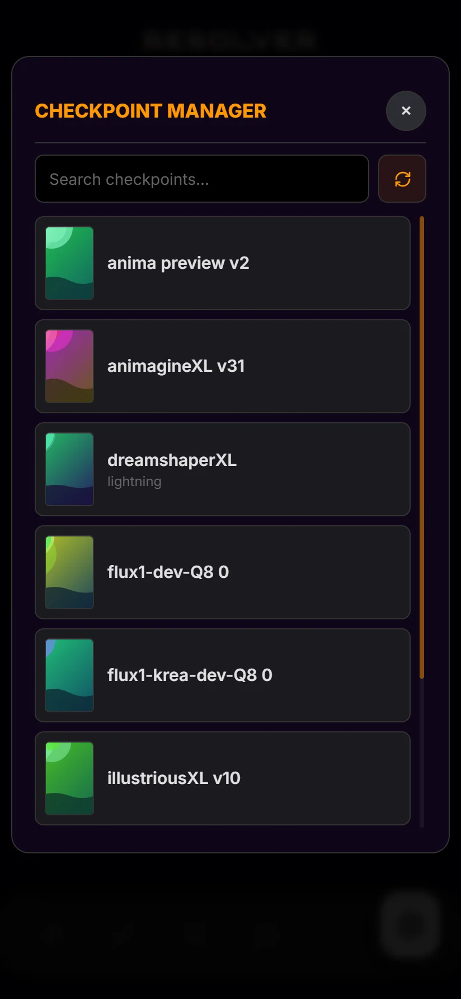
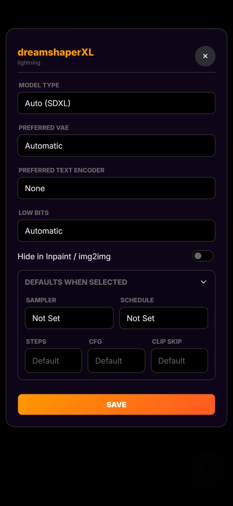
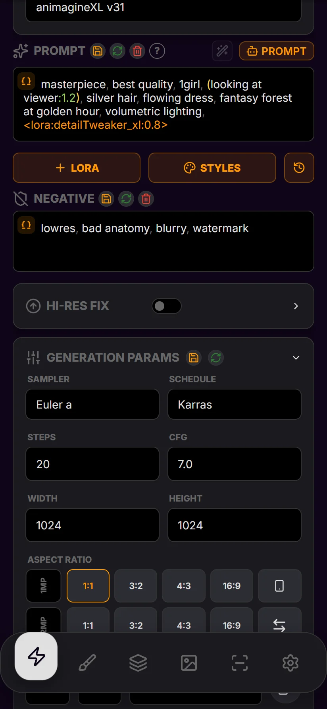
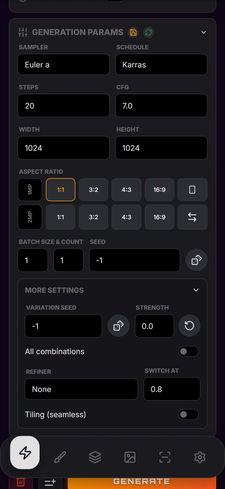
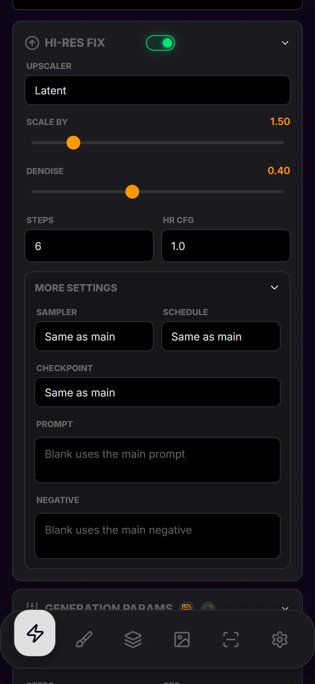
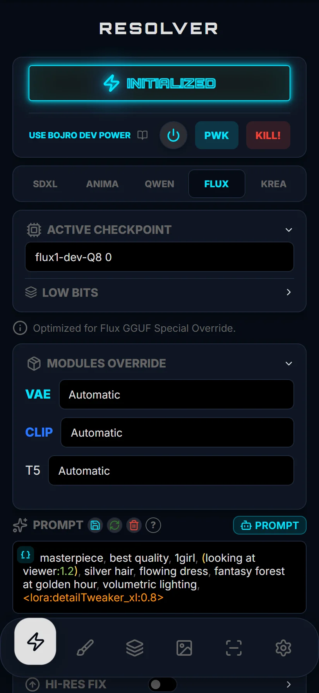
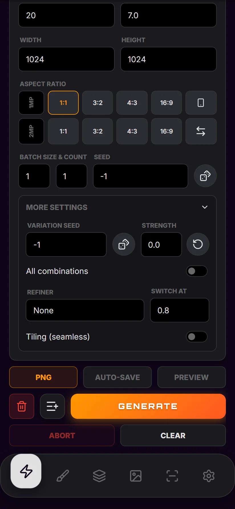

Docs / Create
Generate
The tab you’ll use most: pick a model, write what you want, adjust the settings, and generate. This page goes through every part of it, top to bottom.
The tab at a glance
Tap a number on the screenshot, or a row in the list, to see what that part does.

- INITIALIZE ENGINEConnects to Forge and loads its models. It glows and says INITIALIZED once connected. See Getting Started.
- Dev Power rowWake your PC (power button), PWK and KILL! for the services on it, through the Bojro Dev Power helper on your PC. Hidden with Config → Interface → Show Dev Power.
- Model tabsSDXL, Anima, Qwen, Flux and Krea. Each keeps its own checkpoint, prompts and settings. More below.
- Active CheckpointThe model file Forge uses for this tab. Tap to pick from the checkpoints of this tab’s type. More below.
- Prompt toolsSave the prompt as this tab’s default, put the default back in, clear the box, and open the Prompt Guide (?). More below.
- Scene optimizationThe wand: lets Magic Prompt’s AI model choose wildcard options that suit each other and the picture.
- PROMPT (Magic Prompt)Opens Magic Prompt: a local AI model writes or extends your prompt, or describes an image.
- Wildcards buttonThe
{ }button in the box opens your wildcards to insert one (__name__). - Prompt boxWhat you want in the picture. Colors show LoRAs, weights, brackets and wildcards; it grows as you type.
- + LORAOpens your LoRAs to add one to the prompt. See LoRAs & Styles.
- STYLESSaved prompt presets you can tap in and out. See Styles.
- Recent PromptsThis tab’s last 20 prompts, with the styles, LoRAs and sliders they used.
- NegativeWhat you don’t want (blur, watermarks, extra fingers…). Has its own save / default / clear buttons.
- Hi-Res FixGenerates, then enlarges and refines the image in a second pass. More below.
- Generation ParamsSampler, steps, CFG, size, batch, seed and more. More below.
- DockSwitches between the app’s tabs. Tap, or slide your finger along it and let go.
Further down the tab (not in this view): optional sections such as ADetailer, ControlNet and Forge Couple (see Extensions), then the format, Auto-Save and Preview buttons, and the buttons that start and stop jobs.
The five model tabs
Different model families need different settings, so each has its own tab with its own color. A tab remembers everything (checkpoint, prompts, settings) while you use the others. Pick a model to see its tab and what’s special about it:
SDXL orange
For SDXL and its family (Pony, Illustrious, NoobAI…). The most complete tab.
- Starts at Euler a · Karras · 20 steps · CFG 7 · 1024×1024.
- The only tab with a Refiner and a separate Hi-Res checkpoint.
- Has Tiling, Forge Couple, ADetailer and ControlNet.
Anima green
For Anima models.
- Starts at Euler · Normal · 25 steps · CFG 5.
- Modules Override: VAE and text encoder.
- Has Tiling, Forge Couple, ADetailer and ControlNet (with SDXL, from the “[SDXL/Anima]” switches in Config).
Qwen pink
“Optimized for Z-Image Turbo”: fast models that need few steps.
- Starts at LCM · Normal · 8 steps · CFG 1.
- Modules Override: VAE and Qwen text encoder.
- ADetailer and ControlNet come from the “[other]” switches in Config.
Flux cyan
“Optimized for Flux GGUF”: Flux checkpoints, often as GGUF files.
- Starts at Euler · Simple · 20 steps · CFG 1, plus Distilled CFG 3.5 (Flux’s own guidance).
- Modules Override: VAE, CLIP and T5.
- Can show Flux Cache (FBC) for speed. Hi-Res has no separate negative.
Krea purple
For Flux Krea models.
- Starts at Euler · Normal · 25 steps · CFG 5.
- Modules Override: VAE and text encoder.
- ADetailer and ControlNet come from the “[other]” switches in Config.
| SDXL | Anima | Qwen | Flux | Krea | |
|---|---|---|---|---|---|
| Modules Override | – | ✓ | ✓ | ✓ | ✓ |
| Refiner, Hi-Res checkpoint | ✓ | – | – | – | – |
| Tiling (seamless) | ✓ | ✓ | – | – | – |
| Forge Couple | ✓ | ✓ | – | – | – |
| Distilled CFG, Flux Cache | – | – | – | ✓ | – |
| ADetailer, ControlNet | ✓ | ✓ | ✓ | ✓ | ✓ |
Hide the tabs you don’t need in Config → Interface → Visible tabs.
Choosing a checkpoint
Tap Active Checkpoint to pick the model file. Each tab only lists checkpoints of its own type: the app recognises the type from the file, and you can correct it in the Checkpoint Manager. Before you connect, the tab shows its last checkpoint dimmed.
Checkpoint Manager
Open it from Config → Models → Checkpoint Manager → MANAGE. It lists every checkpoint with its thumbnail; search at the top, refresh on the right. Tap one to set it up:


- Model TypeAuto, or SDXL · Anima · Qwen · Flux · Krea
- Which tab lists this checkpoint. “Auto (SDXL)” means the app recognised it as SDXL; pick another type if it guessed wrong.
- Preferred VAE / Text Encoder / CLIP / T5
- Modules to use with this checkpoint (the fields shown depend on its type). Applied when you select it.
- Low Bits
- The weight precision for this checkpoint (see Low Bits).
- Hide in Inpaint / img2img
- Leaves this checkpoint out of the Inpaint tab’s list, e.g. a model that doesn’t inpaint well.
- Defaults when selectedSampler · Schedule · Steps · CFG · Clip Skip
- Settings put in for you when you choose this checkpoint on a tab. Leave a field on “Not Set” / “Default” to keep the tab’s own value. A LoRA’s own overrides win over these.
Writing the prompt
The Prompt box is what you want; Negative is what you don’t. Both have the same small buttons:
- Save Current as Default
- Remembers this text as the tab’s default.
- Insert Default
- Puts the saved default back in the box.
- Clear
- Empties the box.
- ? Prompt Guide
- A built-in guide to the prompt syntax: weights, brackets, BREAK, AND, LoRAs, wildcards, with colored examples.

Under the prompt: + LORA and STYLES (see LoRAs & Styles), SAAC when it’s turned on, and Recent Prompts (the clock). How to write prompts, with weights, brackets and wildcards, has its own page: Prompting.
Prompt boxes color what they recognise: <lora:…> tags, weights, each level of brackets, wildcards, and brackets without a partner in red. Turn it off in Config → Prompts → Color-coded prompts.
Generation Params
The core settings. The two small buttons in the header save the current values as this tab’s default and load that default back.
- Sampler
- The method that turns noise into a picture step by step. Euler a and DPM++ 2M are good all-rounders; fast models use their own (LCM on Qwen).
- Schedule
- How the noise is reduced across the steps (Karras, Normal, Simple…). Usually leave the tab’s default.
- Steps
- How many refinement passes. More is slower; past a point it adds little. 20–30 is typical, Turbo/Lightning models need 4–8.
- CFG
- How closely to follow the prompt. Too low looks vague, too high looks burnt. SDXL ~5–7; Turbo and Flux models 1.
- Distilled Flux only
- Flux’s built-in guidance (3.5 by default), used instead of CFG.
- Width · Height
- Picture size in pixels. Use the presets below for sizes the models handle well.
- Batch Size & Count
- Size: images made at once (uses more memory). Count: how many times to repeat. Size 2 × Count 3 = 6 images.
- Seed
- The starting noise.
-1(the dice) means random each time; the same seed with the same settings gives the same picture.

Picture size presets
The presets give good sizes for each shape. Try them (these are the app’s own numbers):
- 1MP / 2MP rows: the same shapes at about one or two megapixels.
- Phone : your phone’s own screen shape, in portrait: a wallpaper that fits exactly.
- Flip : swaps width and height (3:2 becomes 2:3, portrait).
More Settings
- Variation Seed · Strength
- A second seed mixed in by Strength (0–1): keep the picture’s composition but vary details. The dice picks a random one; the arrow resets strength to 0.
- All combinations
- Generates every combination of your prompt’s choices and wildcards instead of random picks (the count shows beside the switch). Big sets are split into runs of “Combinations per run” (Config → Prompts).
- Refiner · Switch At SDXL
- Switches to a second checkpoint for the last part of the steps: 0.8 means the refiner does the final 20%.
- Tiling (seamless) SDXL, Anima
- Makes the picture repeat seamlessly at its edges, for textures and patterns.
Hi-Res Fix
Makes a bigger, sharper picture: it generates at the normal size, then enlarges it and runs a second, lighter pass to add detail. Turn it on with the switch in its header.
- Upscaler
- How the first image is enlarged. “Latent” stays inside the model; ESRGAN-type upscalers (4x-UltraSharp…) enlarge the picture itself.
- Scale By
- How much bigger (1–4×; 1.5 by default).
- Denoise
- How much the second pass may change (0–1). 0.3–0.5 adds detail; higher redraws more.
- Steps · HR CFG
- Steps and CFG for the second pass.
0steps means the same as the main steps.
- More Settings
- A different Sampler, Schedule, Prompt and Negative for the second pass (and a Checkpoint on SDXL). Left on “Same as main”, nothing extra is sent.

Modules, memory and speed
Optional sections for tuning what Forge loads. The last three are hidden until you turn them on in Config → Models.
- Modules OverrideAnima · Qwen · Flux · Krea
- Which VAE and text encoders (CLIP, T5, Qwen TE) to load with the checkpoint. “Automatic” lets Forge decide.
- Low BitsShow low bits
- The weight precision:
bnb-nf4,float8-e4m3fn,bnb-fp4,float8-e5m2, each also “(fp16 LoRA)”. Lower uses less memory and can be faster, at a small cost in quality.
- Never OOMShow Never OOM
- Tiled VAE Decode and UNet Always Offload: slower, but avoids “out of memory” on smaller graphics cards.
- Flux Cache (FBC)Show Flux cache · Flux tab
- First Block Cache speeds Flux up by reusing work between steps. Threshold (0.15): higher is faster but can lose detail. Skip Start (1): steps at the start that are never skipped.

Generating
At the bottom of the tab:
- PNG / JPEG / WEBP
- The format Forge saves in. Tap to cycle; JPEG and WEBP are much smaller. It changes Forge’s own setting, so it also applies to jobs from Forge’s web page. Quality is in Config → Generation.
- AUTO-SAVE
- Saves every new image to your phone’s storage as soon as it arrives, as well as to History.
- PREVIEW
- Live Preview: watch the picture form while it generates (options in Config → Live Preview).
- Clear VRAM
- Unloads the models from your graphics card’s memory, e.g. before another program needs it. Asks first, showing how much is in use.
- Add to queue
- Saves the job, with all its settings, to the Queue tab to run later with others.
- GENERATE
- Starts now. The button shows progress; images appear below it and in History.
- ABORT · SKIP · CLEAR
- ABORT stops the job. SKIP (while more of a batch is coming) drops the current image and moves on. CLEAR empties the results shown here; History keeps them.

Once started, a job carries on with the screen off or the app in the background, with its progress in a notification. Buttons that would start another kind of job are dimmed (BUSY) until it’s done.
What the tab remembers
- Everything, per tab: prompts, checkpoint, settings and open sections stay as you left them, even after closing the app.
- Your defaults: the save buttons on the prompt, negative and Generation Params store a starting point you can bring back with one tap.
- Checkpoint defaults: settings attached to a checkpoint (in the Checkpoint Manager) are put in when you choose it.